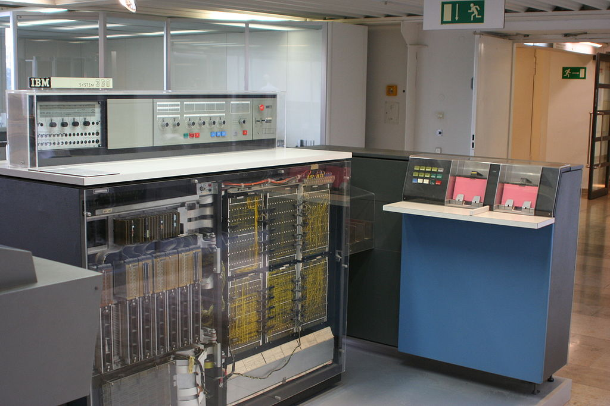
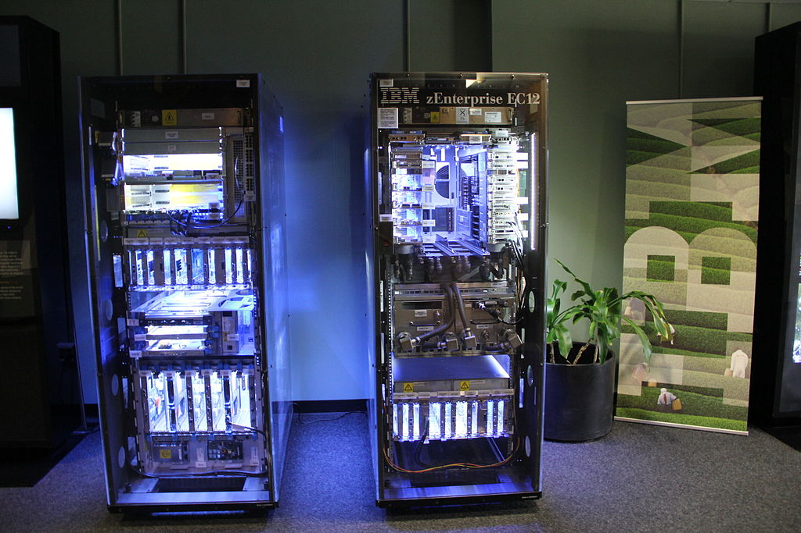
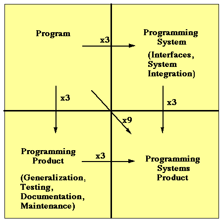
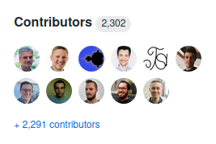
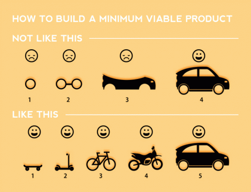

Software Management Lessons
from the 1960s
Larry Garfield
@Crell

- Director of DX, Platform.sh
- PHP-FIG Core Committee
implements Huggable
IBM System/360
Legacy
- 8-bit byte
- Byte-addressable memory
- EBCDIC
Lives on as IBM zSeries
Lead team
Lead architect
Lead manager
"The Mythical Man Month"
1975

Anniversary edition, 1995
It's been another 20(-ish) years...
Is it still valid?
Brooks Law
Communication is hard
Tasks are not parallelizable
Even for Unskilled tasks
Adding people incurs cost

(Depending on swim lanes,
and how early)
Amdahl's law
Is it still true?
Yup
@Crell Get a second speaker on stage, and give both halves of the talk simultaneously. You'll be able to fit in 2x the material.
— Greg Anderson (@greg_1_anderson) September 7, 2016

What should we learn from this?
Why are estimates always wrong?
Programming Systems Product

A substantial bank of test cases, exploring the input range and probing its boundaries, must be prepared, run, and recorded.
—Page 6
Automated testing was already a thing in 1975.
What's your excuse?
How fast can you code?
Extrapolation of times for the hundred-yard-dash shows that a man can run a mile in under 3 minutes.
—Page 88
Effort = Constant * NumInstructions1.5
—Nanus and Farr, Page 89
| Num interactions | Instructions per person-year |
|---|---|
| Very few | 10,000 |
| Some | 5,000 |
| Many | 1,500 |
Joel Aron, Page 90
Large: 25 programmers, 30,000 instructions
But that's for assembly!
PL/I code follows same curve ...for statements
More power/statement => more productivity
Is it still true?
Yup

Lines of code in Symfony 4: 511369
What should we learn from this?
Planning and Documentation
Top-down design
- Architect first
- Refine top-down to produce modules
- Recurse until you have an architecture
- Implement each module
- Debug/test each module separately
- Inform back up as needed
Divide and conquer
Design top-down, implement iteratively
1995
- End-to-end skeleton
- Always Be Compiling
- Grow modules in place
- Throw away modules piecemeal as needed
Refactoring!
Agile?
Wrong!
Agile?
(Credit: http://comunidad.iebschool.com/)
Is it still true?
Yup
"No Silver Bullet"
1986
Essential Complexity
The problem space is hard
Accidental Complexity
The tools are hard to use
Attacking essential complexity
- Rapid prototyping, grow organically, user-feedback
- "Buy versus Build"
- Mentor better architects
Hey, look, Open Source!

The way to be more productive is to write less code
The way to be more productive is to reuse more code
Growing great designers
Growing great designers
Mentoring
- Identify candidates early (may not be most experienced)
- Assign a career mentor
- Apprenticeships, formal education, short courses, solo work
- Encourage collaboration with other designers
Is it still true?
Yup
Conceptual integrity
Ease of use = functionality / conceptual complexity
How?
Smart division of labor
Architect/designer
But that's Cathedral design; that's aristocracy!
Cathedrals are still standing...
See also
- Apple
- Unix / Posix
- HTTP / Browsers
Architect
Designs watch dial and hands
Implementer
Builds gears and bells
Ongoing cooperative effort, high communication
What should we learn from this?
How big is big?
What should we learn from this?
- Software construction is a creative process
- Divide and conquer
- Shareable programming systems products (Open Source)
- Decouple libraries from framework
- Top-down design
- Empower architect to make decisions
Larry Garfield
@Crell
Director of Developer Experience Platform.sh
Idea to Cloud Hosting
Stalk us at @PlatformSH